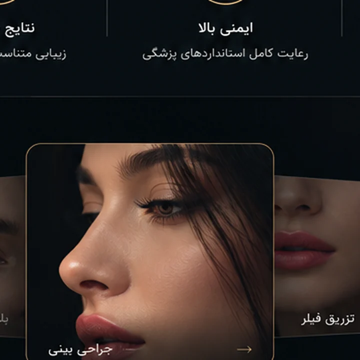

01
01جراحی بینینمونه نتیجه واقعی
با تجربه، دانش و جدیدترین تکنیکهای روز دنیا، به شما کمک میکنیم تا بهترین نسخه از خودتان باشید.
نمونههای منتخب از نتایج جراحی و تغییرات واقعی مراجعین.
01 02
02 03
03
04ویدئوهای منتخب؛ پخش فقط بعد از لمس دکمه Play.
0102030506070910۱۰ جایگاه آماده برای اسکرینشاتهای واقعی رضایت بیماران.
رویکرد ما بر پایه تناسب چهره، حفظ عملکرد و رسیدن به نتیجهای طبیعی و ماندگار است؛ با برنامهریزی اختصاصی برای هر مراجعهکننده.
بیشتر بدانید ←